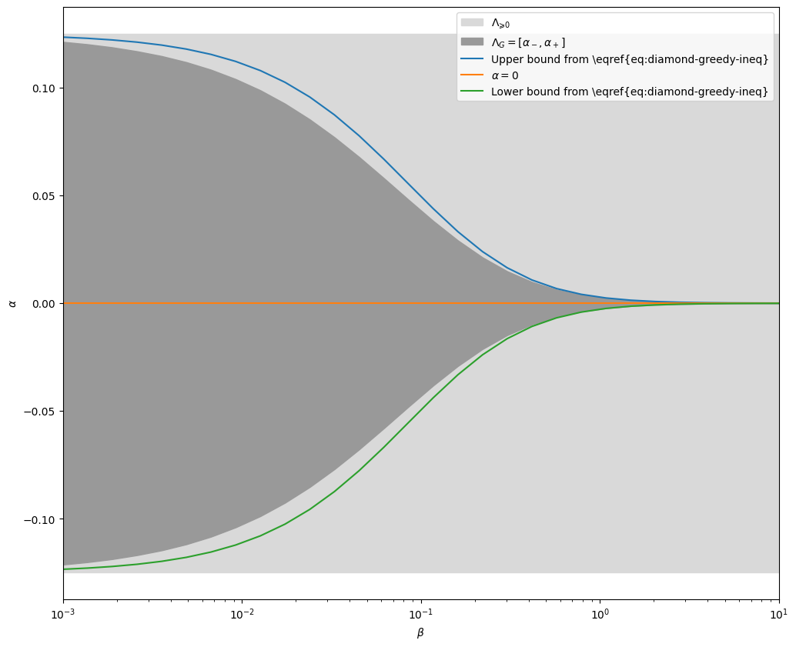
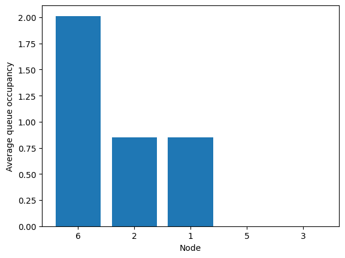
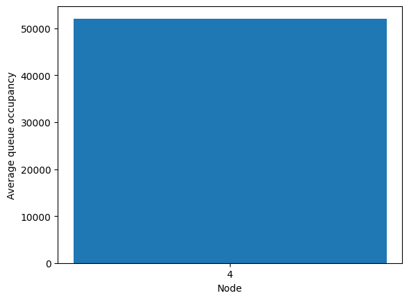
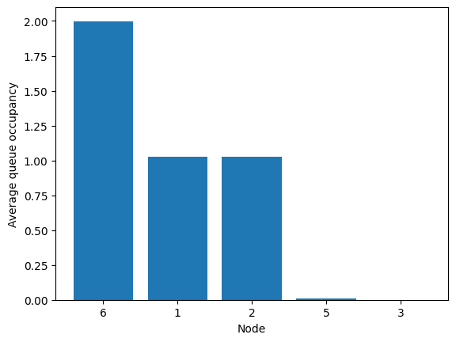
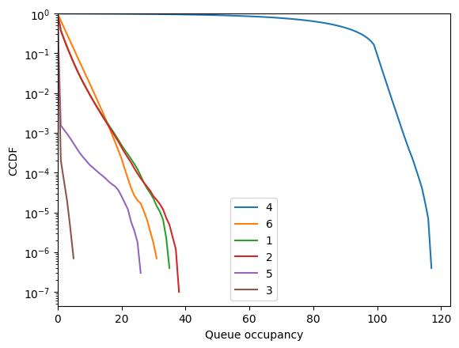
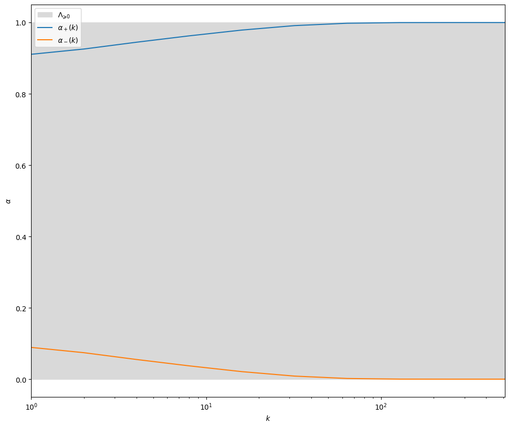
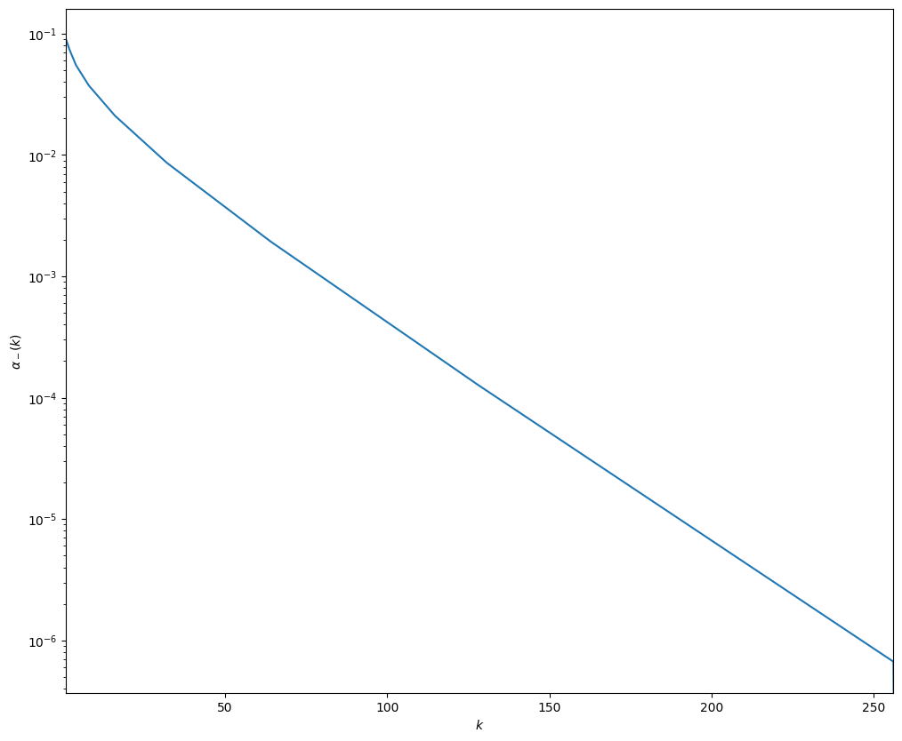
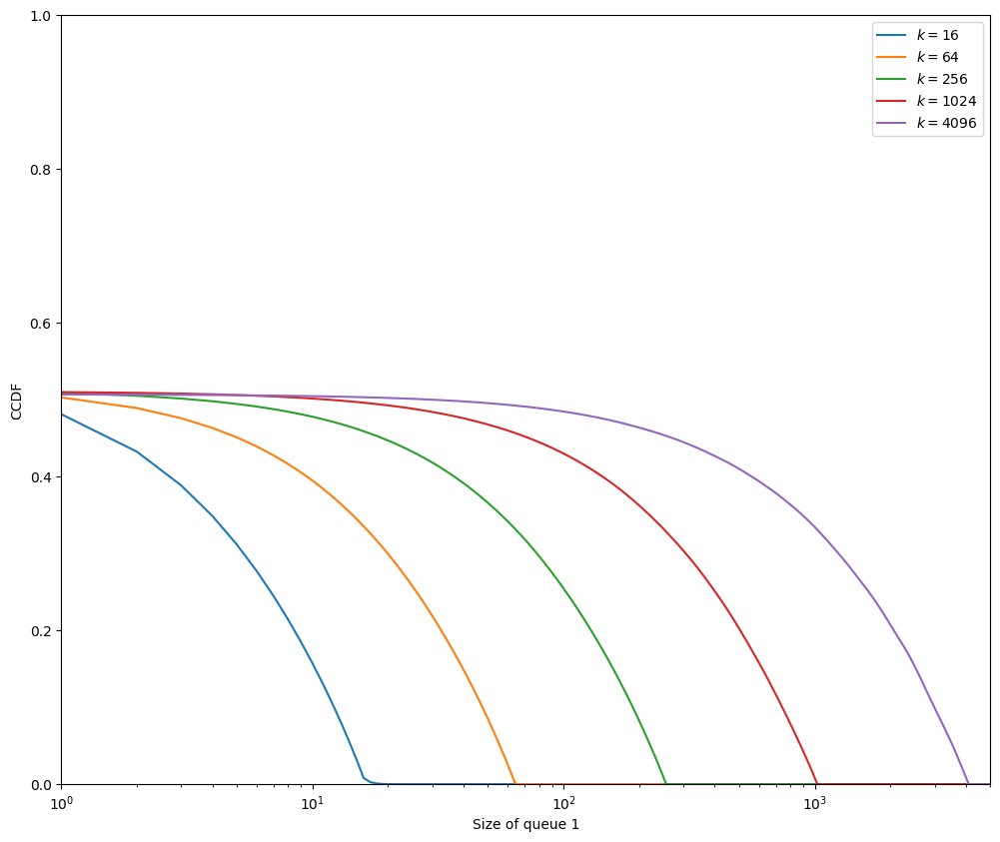
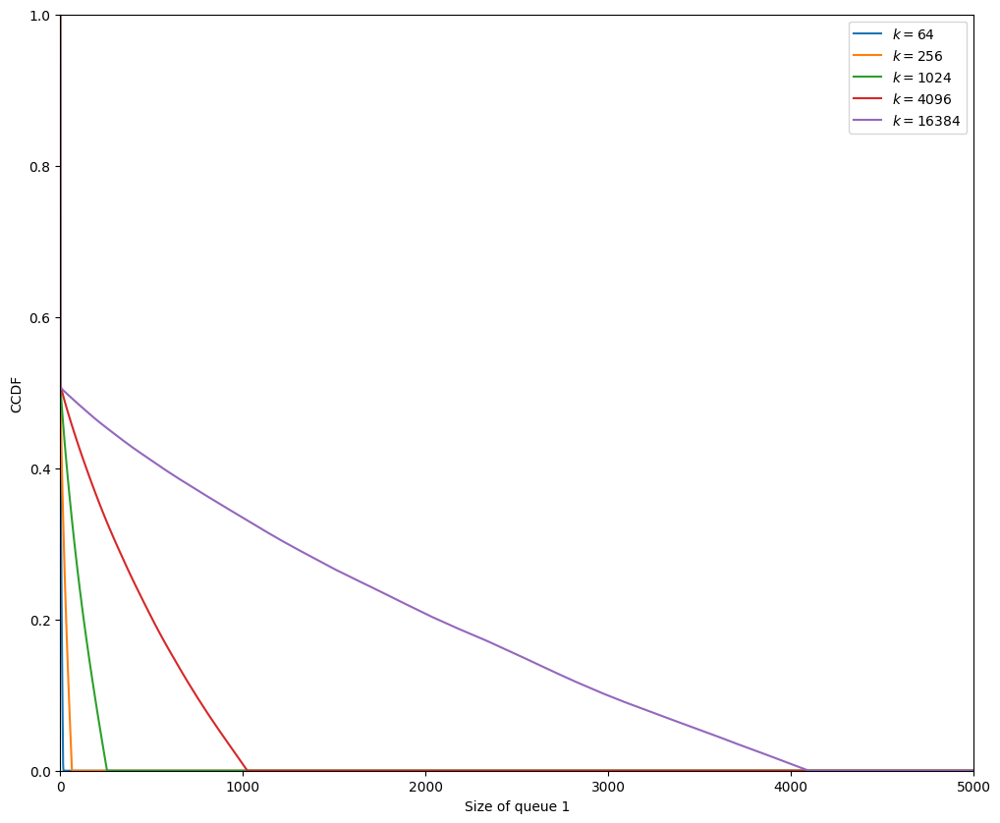
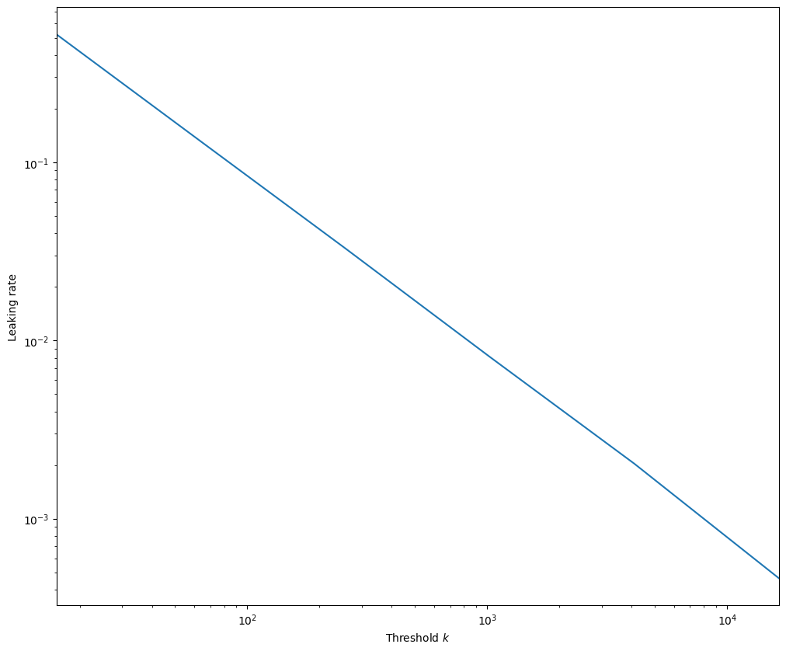

Stochastic matching on simple graphs#
This is the notebook associated with the paper Stochastic dynamic matching: A mixed graph-theory and linear-algebra approach.
Its goal is to demonstrate how the results from the paper above can be obtained using the stochasting_matching package.
It contains in particular the production of all simulation-based results from the paper.
Note that the notebook is NOT intended to be self-contained. Please refer to the paper for context and explanations.
[1]:
import stochastic_matching as sm
from stochastic_matching.display import VIS_OPTIONS
VIS_OPTIONS['height'] = 300
VIS_OPTIONS['interaction']['navigationButtons'] = False
import numpy as np
The default simulation corresponds to \(10^{digits}\) arrivals.
Values below \(6\) should only be used for debugging.
Use \(10\) for high quality results.
Parallelization is used. You can cap the number of // jobs.
[2]:
digits = 10
T = 10**digits
Basis of the kernel#
This section of the notebook reproduces figures from Basis of the kernel of the incidence matrix parts.
Vector of the kernel space for the diamond graph.#
[3]:
diamond = sm.CycleChain(names = [str(i) for i in range(1, 5)])
diamond.show_kernel(disp_rates=False)
Vector of the kernel space for a kayak paddle.#
[4]:
kayak = sm.KayakPaddle(3, 2, 5, names = [str(i) for i in range(1, 10)])
kayak.show_kernel(disp_rates=False)
Two possible constructions of a kernel basis for the triamond graph#
[5]:
triamond = sm.CycleChain(c=3, names = ["1", "5", "2", "4", "3"])
triamond.show_graph()
[6]:
triamond.seeds = [1, 3]
triamond.show_kernel(disp_rates=False)
[7]:
triamond.seeds = [2, 4]
triamond.show_kernel(disp_rates=False)
Two possible constructions of a kernel basis for the codomino graph#
[8]:
codomino = sm.Codomino(names=["1", "6", "2", "3", "5", "4"])
codomino.show_graph()
[9]:
codomino.seeds = [1, 4]
codomino.show_kernel(disp_rates=False)
[10]:
codomino.seeds = [0, 2]
codomino.show_kernel(disp_rates=False)
Bijective vertices and facets of the convex polytope#
This section of the notebook reproduces examples of polytopes.
Essential matching, simple polytope#
[11]:
# Generic solution
codomino = sm.Codomino(names=["1", "6", "2", "3", "5", "4"], rates=[4, 5, 5, 3, 3, 2])
codomino.base_flow = codomino.maximin
codomino.seeds = [0, 2]
codomino.show_kernel(disp_rates=False, disp_flow=True)
[12]:
# Vertices
codomino.vertices
[12]:
[{'kernel_coordinates': array([-1., -1.]),
'edge_coordinates': array([1., 3., 1., 3., 1., 0., 2., 0.]),
'null_edges': [5, 7],
'bijective': True},
{'kernel_coordinates': array([-1., 0.]),
'edge_coordinates': array([1., 3., 2., 2., 0., 1., 2., 0.]),
'null_edges': [4, 7],
'bijective': True},
{'kernel_coordinates': array([0., 1.]),
'edge_coordinates': array([2., 2., 3., 0., 0., 2., 1., 1.]),
'null_edges': [3, 4],
'bijective': True},
{'kernel_coordinates': array([ 1., -1.]),
'edge_coordinates': array([3., 1., 1., 1., 3., 0., 0., 2.]),
'null_edges': [5, 6],
'bijective': True},
{'kernel_coordinates': array([1., 0.]),
'edge_coordinates': array([3., 1., 2., 0., 2., 1., 0., 2.]),
'null_edges': [3, 6],
'bijective': True}]
[13]:
for i in range(5):
codomino.show_vertex(i, disp_rates=False, vis_options={'height': 150})
Non-Essential matching, simple polytope#
[14]:
# Generic solution
codomino.rates = [2, 2, 4, 4, 2, 2]
codomino.base_flow = codomino.kernel_to_edge([1/3, 0])
codomino.show_kernel(disp_rates=False, disp_flow=True)
[15]:
# Vertices
codomino.vertices
[15]:
[{'kernel_coordinates': array([-1., -1.]),
'edge_coordinates': array([0., 2., 0., 2., 2., 0., 2., 0.]),
'null_edges': [0, 2, 5, 7],
'bijective': False},
{'kernel_coordinates': array([-1., 1.]),
'edge_coordinates': array([0., 2., 2., 0., 0., 2., 2., 0.]),
'null_edges': [0, 3, 4, 7],
'bijective': False},
{'kernel_coordinates': array([ 1., -1.]),
'edge_coordinates': array([2., 0., 0., 0., 4., 0., 0., 2.]),
'null_edges': [1, 2, 3, 5, 6],
'bijective': False}]
[16]:
for i in range(3):
codomino.show_vertex(i, disp_rates=False, vis_options={'height': 150})
Non-simple polytope#
[17]:
pyramid = sm.Pyramid(rates = [4, 3, 3, 3, 6, 6, 3, 4, 4, 4],
names = ["9", "2", "1", "8", "7", "3", "4", "5", "6", "10"])
pyramid.seeds = [0, 12, 2]
pyramid.base_flow = pyramid.kernel_to_edge([1/6, 1/6, 1/6])
pyramid.show_kernel(disp_flow=True, disp_rates = False, vis_options={'height': 450})
[18]:
pyramid.vertices
[18]:
[{'kernel_coordinates': array([-1., 1., 0.]),
'edge_coordinates': array([1., 3., 0., 2., 0., 3., 3., 0., 1., 2., 1., 1., 3.]),
'null_edges': [2, 4, 7],
'bijective': True},
{'kernel_coordinates': array([-1., -1., 0.]),
'edge_coordinates': array([1., 3., 0., 2., 0., 3., 1., 2., 3., 0., 1., 3., 1.]),
'null_edges': [2, 4, 9],
'bijective': True},
{'kernel_coordinates': array([0., 0., 1.]),
'edge_coordinates': array([2., 2., 1., 0., 0., 3., 3., 0., 3., 0., 2., 2., 2.]),
'null_edges': [3, 4, 7, 9],
'bijective': False},
{'kernel_coordinates': array([ 1., -1., 0.]),
'edge_coordinates': array([3., 1., 0., 0., 2., 1., 3., 2., 3., 0., 1., 3., 1.]),
'null_edges': [2, 3, 9],
'bijective': True},
{'kernel_coordinates': array([1., 1., 0.]),
'edge_coordinates': array([3., 1., 0., 0., 2., 1., 5., 0., 1., 2., 1., 1., 3.]),
'null_edges': [2, 3, 7],
'bijective': True}]
[19]:
for i in range(5):
pyramid.show_vertex(i, disp_rates=False, vis_options={'height': 250})
Greedy policies#
This section of the notebook builds the figures from Matching rates in surjective-only graphs: greedy policies.
Complete graph#
[20]:
# Note: the kernel is reversed compared to the figure in the paper; this does not change anything but signes in practice
complete = sm.Complete(n=4, names=[str(i) for i in range(1, 5)])
complete.show_kernel(disp_rates=False)
[21]:
complete.vertices
[21]:
[{'kernel_coordinates': array([-1., -1.]),
'edge_coordinates': array([0., 0., 3., 3., 0., 0.]),
'null_edges': [0, 1, 4, 5],
'bijective': False},
{'kernel_coordinates': array([-1., 2.]),
'edge_coordinates': array([3., 0., 0., 0., 0., 3.]),
'null_edges': [1, 2, 3, 4],
'bijective': False},
{'kernel_coordinates': array([ 2., -1.]),
'edge_coordinates': array([0., 3., 0., 0., 3., 0.]),
'null_edges': [0, 2, 3, 5],
'bijective': False}]
For heavy computational stuff, we use the following approach: - Simulations are run on parallel. - Results of interest are saved in a pickle file. - If the pickle file exists, it bypasses the computation.
[22]:
from stochastic_matching import XP, Iterator, evaluate
from multiprocess import Pool
[23]:
base = {'model': complete, 'n_steps': T, 'seed': 42}
xps = sum([XP('Longest', simulator='longest', **base),
XP('FCFM', simulator='fcfm', **base),
XP('Random Edge', simulator='random_edge', **base),
XP('Random Item', simulator='random_item', **base),
XP('Priority', simulator='priority', weights=[1, 10, 0, -1, 3, 4], **base)
])
[24]:
def simu_flow_coordinates(model):
flow = model.simulation
return model.edge_to_kernel(flow)
[25]:
with Pool(5) as p:
res = evaluate(xps, simu_flow_coordinates, pool=p, cache_name='complete')
res
[25]:
{'Longest': array([0., 0.]),
'FCFM': array([0., 0.]),
'Random Edge': array([0., 0.]),
'Random Item': array([0., 0.]),
'Priority': array([0., 0.])}
No matter what policy is used, the results is always the same in a complete graph, as all greedy policies are equivalent.
Diamond graph#
[26]:
def beta_to_model(beta):
return sm.CycleChain(names=[str(i) for i in range(1, 5)], rates=[1/4, 1/4+beta, 1/4+beta, 1/4])
n_points = 30
β_vect = np.logspace(-3, 1, n_points)
model_iter = Iterator('model', β_vect, 'β', beta_to_model)
[27]:
xps = XP('Greedy vertex', simulator='priority', weights=[1, 0, 0, 0, 1], n_steps=T, iterator=model_iter)
[28]:
def alpha(model):
flow = model.simulation
return {'α': (flow[0]+flow[-1]-flow[1]-flow[3])/4}
[29]:
with Pool() as p:
res = evaluate(xps, alpha, pool=p, cache_name='diamond')['Greedy vertex']['α']
[30]:
from matplotlib import pyplot as plt
def min_flow2(beta):
q13=1/(4*beta)
q2=1/2+2*beta
p0 = 1/(1+q13+2*q2)
return p0*q2/4 + p0/(1+8*beta)*(1/4+beta)-1/8
lbi = [min_flow2(β) for β in β_vect]
ubi = [-min_flow2(β) for β in β_vect]
[31]:
import tikzplotlib
def tikzplotlib_fix_ncols(obj):
"""
workaround for matplotlib 3.6 renamed legend's _ncol to _ncols, which breaks tikzplotlib
"""
if hasattr(obj, "_ncols"):
obj._ncol = obj._ncols
for child in obj.get_children():
tikzplotlib_fix_ncols(child)
[32]:
fig = plt.figure(figsize=[12, 10])
res = np.array(res)
plt.fill_between(β_vect, -1/8*np.ones(n_points), 1/8*np.ones(n_points), label = '$\Lambda_{\geqslant 0}$', color = [.85, .85, .85, 1])
plt.fill_between(β_vect, -res, res, label = '$\Lambda_G = [\\alpha_-, \\alpha_+]$', color = [.6, .6, .6, 1])
plt.semilogx(β_vect, ubi, label='Upper bound from \eqref{eq:diamond-greedy-ineq}')
plt.semilogx(β_vect, np.zeros(n_points), label='$\\alpha=0$')
plt.semilogx(β_vect, lbi, label='Lower bound from \eqref{eq:diamond-greedy-ineq}')
plt.xlabel('$\\beta$')
plt.ylabel('$\\alpha$')
plt.legend()
plt.xlim([β_vect[0], β_vect[-1]])
tikzplotlib_fix_ncols(fig)
tikzplotlib.save(f"diamond_{digits}.tex", axis_width="12cm", axis_height="8cm",
)
plt.show()

Fish graph#
[33]:
fish = sm.KayakPaddle(3, 0, 4, names=[str(i) for i in range(1, 7)],
rates=[4, 4, 3, 2, 3, 2])
fish.base_flow = fish.optimize_edge(3, -1)
fish.show_kernel(disp_rates=False, disp_flow=True)
Limitation lemma#
[34]:
paw = sm.Tadpole(names = [str(i) for i in range(1, 5)], rates=[4, 4, 3, 1])
paw.stabilizable
[34]:
True
[35]:
paw.base_flow
[35]:
array([3., 1., 1., 1.])
[36]:
paw.run('priority', weights=[0, 1, 1, 0], max_queue=10**7, n_steps=10**7)
[36]:
True
[37]:
paw.show_flow(disp_rates=False)
Theory predict a matching rate \(9/11\) for node 4.
[38]:
9/11
[38]:
0.8181818181818182
Unstable policy lemma#
[39]:
fish.run('priority', weights=[0, 3, 3, 2, 0, 0, 2], max_queue=10**7, n_steps=10**7)
fish.show_flow(disp_rates=False)
Queues 3 and 5 are empty because 4 is transient and never empty.
[40]:
fig = fish.simulator.show_average_queues(sort=True, indices=[0, 1, 2, 4, 5])

For finite simulations, transient means very big queue.
[41]:
fig = fish.simulator.show_average_queues(sort=True, indices=[3])

Threshold-controlled priorities#
[42]:
fish.run('priority', weights=[0, 3, 3, 2, 0, 0, 2], threshold=100, counterweights=[0, 1, 1, 2, 0, 0, 2],
n_steps=10**7)
[42]:
True
[43]:
fish.show_flow(disp_rates=False)
[44]:
fig = fish.simulator.show_average_queues(sort=True, indices=[0, 1, 2, 4, 5])

[45]:
fig = fish.simulator.show_average_queues(sort=True, indices=[3])
[46]:
fig = fish.simulator.show_ccdf(sort=True)

The default priority policy implemented in the package is conditioned on the max queue size, while the policy described on the paper is conditioned on the queue size of one specific node. We can craft a new selector for the experiment.
[47]:
from numba import njit
def pivot_priority_selector(weights, threshold, counterweights, pivot):
"""
Make a jitted edge selector based on priorities.
"""
def priority_selector(graph, queue_size, node):
best_edge = -1
best_weight = -1000
if threshold is None or queue_size[pivot]<threshold:
w = weights
else:
w = counterweights
for e in graph.edges(node):
for v in graph.nodes(e):
if queue_size[v] == 0:
break
else:
if w[e] > best_weight:
best_weight = w[e]
best_edge = e
return best_edge
return njit(priority_selector)
class Fish(sm.Priority):
name = 'fish'
def __init__(self, model, pivot, **kwargs):
self.pivot = pivot
super().__init__(model, **kwargs)
def set_internal(self):
super().set_internal()
self.internal['selector'] = pivot_priority_selector(weights=self.weights,
threshold=self.threshold,
counterweights=self.counterweights,
pivot=self.pivot)
[48]:
sm.common.get_classes(sm.Simulator)
[48]:
{'fcfm': stochastic_matching.simulator.fcfm.FCFM,
'priority': stochastic_matching.simulator.priority.Priority,
'random_edge': stochastic_matching.simulator.random_edge.RandomEdge,
'random_item': stochastic_matching.simulator.random_item.RandomItem,
'e_filtering': stochastic_matching.simulator.e_filtering.EFiltering,
'longest': stochastic_matching.simulator.longest.Longest,
'virtual_queue': stochastic_matching.simulator.virtual_queue.VirtualQueue,
'fish': __main__.Fish}
[49]:
fish = sm.KayakPaddle(3, 0, 4, names=[str(i) for i in range(1, 7)],
rates=[4, 4, 3, 2, 3, 2])
k_vect = 2**(np.arange(10))
k_iter = Iterator('threshold', k_vect, 'k')
base = {'iterator': k_iter, 'n_steps': T, 'seed': 42}
xps = XP('pos', simulator=Fish, model=fish,
weights=[0, 3, 3, 2, 0, 0, 2], counterweights=[0, 1, 1, 2, 0, 0, 2],
pivot=3, **base)
xps += XP('neg', simulator=Fish, model=fish,
weights=[0, 3, 3, 0, 2, 2, 0], counterweights=[0, 1, 1, 0, 2, 2, 0],
pivot=5, **base)
def edge_flow(model):
return {'flow': model.simulation[3]}
[50]:
import dill
dill.settings['recurse'] = True
with Pool() as p:
res = evaluate(xps, edge_flow, pool=p, cache_name='fish')
[51]:
fig = plt.figure(figsize=[12, 10])
n_points = len(k_vect)
alm = res['neg']['flow']
alp = res['pos']['flow']
plt.fill_between(k_vect, np.zeros(n_points), np.ones(n_points), label = '$\Lambda_{\geqslant 0}$', color = [.85, .85, .85, 1])
plt.semilogx(k_vect, alp, label = '$\\alpha_+(k)$')
plt.semilogx(k_vect, alm, label = '$\\alpha_-(k)$')
plt.xlabel('$k$')
plt.ylabel('$\\alpha$')
plt.legend()
plt.xlim([k_vect[0], k_vect[-1]])
tikzplotlib_fix_ncols(fig)
tikzplotlib.save(f"fish_semilog_{digits}.tex", axis_width="6.5cm", axis_height="6cm")
plt.show()

[52]:
fig=plt.figure(figsize=[12, 10])
n_points = len(k_vect)
plt.semilogy(k_vect, alm)
plt.xlabel('$k$')
plt.ylabel('$\\alpha_-(k)$')
plt.xlim([k_vect[0], 256])
tikzplotlib_fix_ncols(fig)
tikzplotlib.save(f"fish_loglog_{digits}.tex", axis_width="6.5cm", axis_height="6cm")
plt.show()

Semi-filtering policies on an injective-only vertex#
[53]:
codomino = sm.Codomino(rates=[2, 4, 2, 2, 4, 2], names=["1", "6", "2", "3", "5", "4"])
codomino.base_flow = np.array([1.0, 1.0, 1.0, 2.0, 0.0, 1.0, 1.0, 1.0])
codomino.vertices
[53]:
[{'kernel_coordinates': array([-1., -1.]),
'edge_coordinates': array([0., 2., 0., 4., 0., 0., 2., 0.]),
'null_edges': [0, 2, 4, 5, 7],
'bijective': False},
{'kernel_coordinates': array([-1., 1.]),
'edge_coordinates': array([2., 0., 0., 2., 2., 0., 0., 2.]),
'null_edges': [1, 2, 5, 6],
'bijective': False},
{'kernel_coordinates': array([1., 1.]),
'edge_coordinates': array([2., 0., 2., 0., 0., 2., 0., 2.]),
'null_edges': [1, 3, 4, 6],
'bijective': False}]
[54]:
codomino.show_vertex(0, disp_rates=False)
[55]:
codomino = sm.Codomino(rates=[2, 4, 2, 2, 4, 2])
codomino.base_flow = np.array([1.0, 1.0, 1.0, 2.0, 0.0, 1.0, 1.0, 1.0])
forbidden_edges = codomino.vertices[0]['null_edges']
k_vect = 16*4**np.arange(6)
k_iter = Iterator('k', k_vect)
base = {'model': codomino, 'simulator': 'longest', 'n_steps':T, 'max_queue': 20000, 'seed': 42,
'forbidden_edges': forbidden_edges}
xps = XP('Injective', **base, iterator=k_iter)
[56]:
def metrics(model):
return {'ccdf': model.simulator.compute_ccdf()[0, :],
'leak': np.sum(model.simulation[codomino.vertices[0]['null_edges']])}
[57]:
with Pool() as p:
res = evaluate(xps, metrics, pool=p, cache_name='injective')['Injective']
[58]:
fig=plt.figure(figsize=[12, 10])
for i, k in enumerate(res['k'][:-1]):
plt.semilogx(res['ccdf'][i], label=f"$k={k}$")
plt.legend(loc=1)
plt.ylim([0, 1])
plt.xlim([1, 5000])
plt.xlabel("Size of queue 1")
plt.ylabel("CCDF")
tikzplotlib_fix_ncols(fig)
tikzplotlib.save(f"codomino_semilog_{digits}.tex", axis_width="4.5cm", axis_height="4cm")
plt.show()

[59]:
fig=plt.figure(figsize=[12, 10])
for i, k in enumerate(res['k'][1:]):
plt.plot(res['ccdf'][i], label=f"$k={k}$")
plt.legend()
plt.ylim([0, 1])
plt.xlim([0, 5000])
plt.xlabel("Size of queue 1")
plt.ylabel("CCDF")
tikzplotlib.clean_figure()
tikzplotlib_fix_ncols(fig)
tikzplotlib.save(f"codomino_linear_{digits}.tex", axis_width="6.5cm", axis_height="6cm")
plt.show()

[60]:
fig=plt.figure(figsize=[12, 10])
plt.loglog(res['k'], res['leak'])
plt.xlabel('Threshold $k$')
plt.ylabel('Leaking rate')
plt.xlim([k_vect[0], k_vect[-1]])
tikzplotlib_fix_ncols(fig)
tikzplotlib.save(f"codomino_loglog_{digits}.tex", axis_width="6.5cm", axis_height="6cm")
plt.show()
